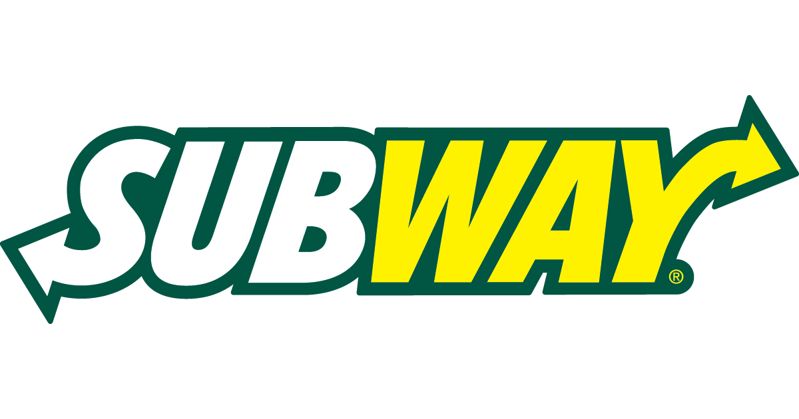
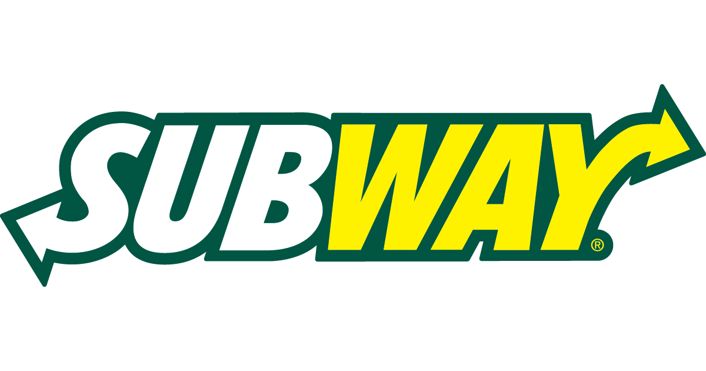

Benjamin Lim
Enter bio here
My name is Benjamin Lim and I am currently a freshman at University of California Riverside. I just recently turned 18 years old. My major is computer science with business applications. In the first quarter of my freshman year I took the class CS10A. In that class I learned how to write code in C++ and learned to apply it through different projects and labs. At first I had a very hard time trying to learn to code, especially with the syntax. However, as the class started to go on I started to get the grasp of it. I stopped making careless mistakes. Then there was another hurdle. Not only was learning to code challenging in it syntax, it was also challenging in its logic. The combination of having to keep track of syntax and trying to solve the problem at hand proved to be very difficult. As I kept trying and trying I finally started to find patterns and my brain had started to adjust to the different types of coding problems. Currently I would not say I am good at coding yet, however I have definitely come along way from where I had started.
Enter bio here
Since I am a freshman coming into the University of California Riverside, I do not have a ton of professional experience. However I have volunteered in high school. One volunteering jobs that I had was helping kids with disabilities. Every Saturday I would come in with other volunteers and spend the day with kids who needed aid because they had special disabilities. I was assigned to help Patrick, who was new to the program and diagnosed with autism. When I first started to get to know him he would always ignore me and run away. After observing for a couple sessions I noticed that right when he would try to play with the other kids he would always be left out due to him being new. Because I was in charge of the activities I based the afternoon activities on some of his hobbies. These activities helped him relate to his peers and boost his mood overall. When his mom saw him playing with other children she started to tear up and thanked me for helping her son fit in. When starting volunteering I was trying to find a place where I felt I was needed. Doing so helped me find purpose and help the kids from Milal find a place where they could call their own home.
Originally I came into college thinking I was going to be a business major. The reason was because I used to run a sneaker business. I discovered that I could sell sneakers and make a profit through social media. The first time making money was when I went to my first sneaker convention. In the pit, all I could hear were traders shouting over each other. Yeezys for 250! Jordans for 200! Nothing I could afford with the $25 left after Uber and entrance fees. Then, all of a sudden, I noticed someone selling a bundle of supreme stickers. I figured I could invest $25 and resell the stickers individually or trade them for other cheaper products. By the end of the day, I managed to trade my way up from stickers to beanies to backpacks to finally a box logo hoodie that I sold for $750. This experience taught me the process of business and how I could make money.
Enter bio here
Experience
Volunteer to Help Kids
• Made an app so kids could play with it
• Learned to deal with kids with special needs
• Helped kids with their homework
Cashier
• Responsible for checking out customers
• Made sure that all transactions were right
FBLA
• Worked in groups
• Competed in multiple events
• Created study plans to help peers be successful
• Got first place in accounting event
Education
UC Riverside
University of California Riverside
University of California Riverside
Portfolio




